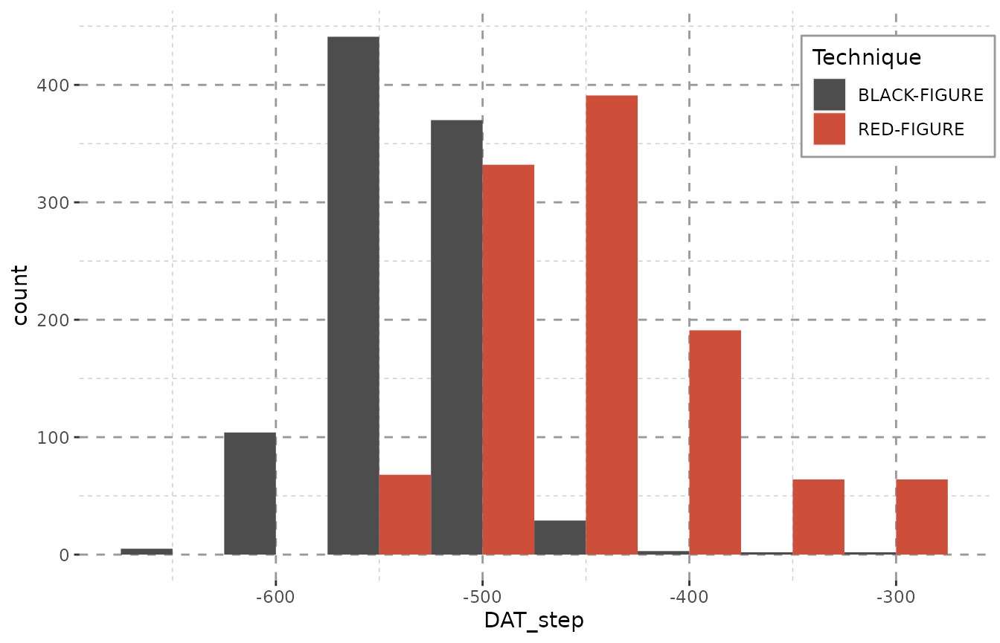
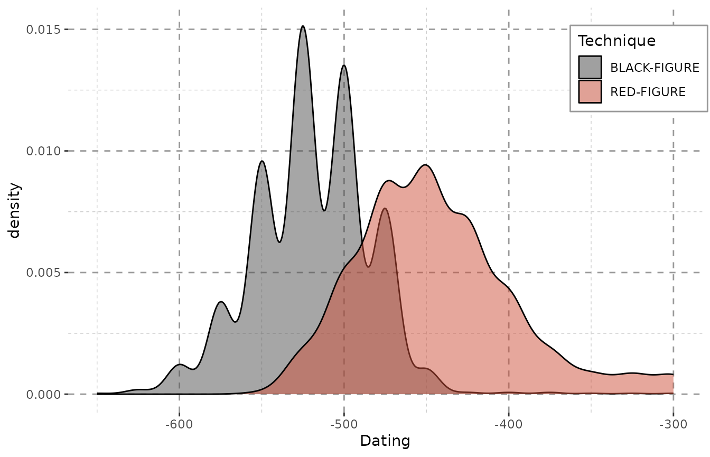
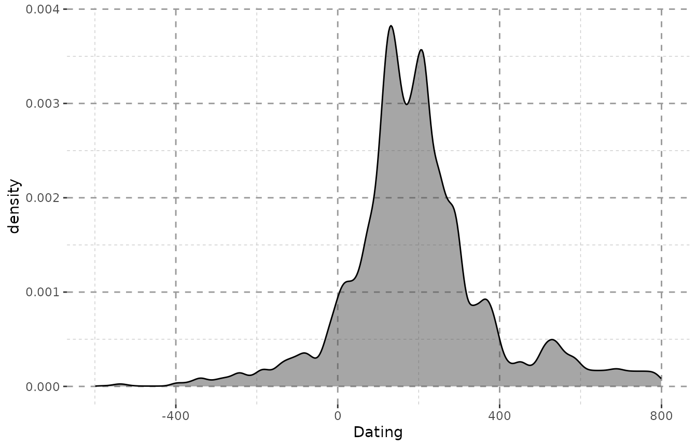

Why?
A rather common problem in archaeology is the fuzziness of dates assigned to objects. If one wants to visualize overall changes in - let’s say - pottery consumption, bar charts often fall short in that regard. If we have Phases a – f, then some of the objects can usually be dated to a, c, and f, as an example, but others will by classified as “a to c” or “b to c”. But how can these data still be used for examining changes in a large set of objects, respecting the quality of their dating? The answer lies in aoristic analysis, which was implemented in criminology to assess the general temporal occurrence of burglaries from the reported time span in between which individual burglaries had happened (Ratcliffe 2000). This concept has been implemented in archaeology before (see Orton, Morris, and Pipe (2017), 3–5 for a recent overview; generally credited with the first implementation for archaeology is Johnson (2004)). There are other R-packages that implement aoristic analysis in archaeology, usually with a less object-based focus and with differing algorithms (namely aoristAAR, archSeries, tabula and rtefact). We wholeheartedly recommend trying out those packages as well to find the best fit for your data. This implementation (datplot) is kept rather simple. The case study with which the package is published (Weissova and Steinmann 2021) addresses classical archaeology, but the package itself is in no way restricted to any discipline.
How?
First, it is important to translate the phases into numbers. This should be easily possible for archaeological data, as there is usually an accepted date for each phase or period. While not directly providing numeric or absolute chronological values, e.g. the iDAI chronontology provides approaches for unified terminology. Usually, this would depend on the discipline and geographical frame of research in particular and has to be chosen for each analysis. When a concordance for phases and their absolute dating exists, it should be easy to apply these to single objects. We have illustrated the process of cleaning and transforming real world archaeological data in a very manual solution in the “Data Preparation and Visualization”-vignette to this package. Using may cause other problems in the end, since such phases are often employed to avoid dates, but it is necessary as the aim is to visualize the distribution on a (pseudo-)continuous scale, for which numbers are needed. Also, this step may be reversed for the final visualization by supplementing or replacing the scale on the x-axis with the respective phases. An automated process has not been implemented yet.
Ideally, one can produce a ‘beginning’ and ‘end’ date for each object, or let’s say an earliest possible dating and a latest possible dating, e.g. corresponding to beginning and start of each phase the object is dated to.
To show and explain how this would work, we chose a random sample of Athenian pottery from the Beazley archive (Oxford n.d.), as it is a large publicly available data set. (Since the format provided by the BAPD is slightly different from that needed here we converted the data beforehand to match requirements. No values have been changed. The sample data set is included in datplot. In a recent version the Inscriptions of Bithynia data set has been added to datplot as well. Its cleaning and formatting is detailed in the “data_preparation”-vignette as an example for scholars looking for approaches to the transformation of verbose and heterogeneous data. The same vignettes also suggests some visualizations of said data set.)
| Vase.Number | Technique | DAT_min | DAT_max | |
|---|---|---|---|---|
| 57040 | 303099 | BLACK-FIGURE | -500 | -450 |
| 24134 | 28292 | BLACK-FIGURE | -550 | -500 |
| 6723 | 7364 | BLACK-FIGURE | -525 | -475 |
| 53674 | 275848 | RED-FIGURE | -500 | -450 |
| 40397 | 207573 | RED-FIGURE | -475 | -425 |
| 46742 | 214625 | RED-FIGURE | -475 | -425 |
| 52410 | 242922 | RED-FIGURE | -400 | -300 |
| 9323 | 10130 | BLACK-FIGURE | -500 | -450 |
| 65501 | 352236 | BLACK-FIGURE | -525 | -475 |
| 83018 | 9003632 | RED-FIGURE | -400 | -300 |
How to Display a Range?
The table provides two dates for each object. The earliest possible dating (DAT_min) and the latest possible dating (DAT_max). In order to be able to process this to a density graph, which is the most elegant means of visualization for continuous distributions (see also Crema, Bevan, and Lake (2010), 1123 or Baxter and Cool (2016), 125–126). (At least if the goal is merely to evaluate changes over time and the probability of object groups dating to a certain point in time, and not to look at actual objects counts, which will be obscured.) The scale we use is only pseudo-continuous, as the data actually comprises of intervals (1 year, or 25 years, etc.), but we nonetheless treat it as a continuous one.
Objects that can be dated with greater confidence should have a
larger impact on the overall visualization. The core function of this
package (datsteps()) produces a column named either
‘weight’ or ‘probability’ which contains a value that reflects the
quality of dating (‘weight’) or the probability of an object being dated
to a certain year (‘probability’). For the calculation of ‘weight’, see
(Weissova and Steinmann 2021). The formula
for probability calculation is simply ‘1 / ((max - min) + 1)’.
In any case, the greater the time span, the lower the weight value or
probability. This is a generally accepted method of aoristic analysis
(Ratcliffe 2000, 671–72 with Fig. 1) and
explained in greater detail in (Weissova and
Steinmann 2021). In the case of a stepsize of 1, the weight value
can be seen as an actual dating probability to the specific year. As an
example, a coin dated between 36 and 37 CE will thus have a probability
of 0.5 for the year 36, and 0.5 for the year 37. The calculation of
probability does, however not work with greater stepsizes. It is
possible to switch between both variants of calculation by using
datsteps(x, calc = "weight") or
datsteps(x, calc = "probability"). When the probability is
calculated, there is an option to add a cumulative probability column
(datsteps(x, calc = "probability", cumulative = TRUE)).
Secondly, every object is duplicated a number of times equal to the dating range divided by the stepsize-variable. Each duplicate has its own ‘DAT_step’ – one single value between the two extremes. The above mentioned weight variable is divided by the number of steps, so that each new fictional object or ‘date step’ counts only as a fraction of the actual object. With this, we hope to achieve a greater influence of closely dated objects and a higher emphasis on overlap.
This method will not be useful for dating specific contexts, since any concept of terminus post/ante quem is lost here, which is important on a smaller scale. It may however be applicable for contexts that are disturbed, as a noticeable overlap of objects could give an indication for the original tpq-date. The method is suitable also for the visualization of changes in trends over time, e.g. the popularity of pottery types, or overall peaks in occupation from survey data (Orton, Morris, and Pipe 2017, 5).
Other approaches, e.g. using the median date of each object, may in some cases produce similar outcomes, but create other problems. A lot of information is lost on the way when employing averaged or median data, as large amount of loosely dated objects will produce peaks at unreasonable values. (Consider a large amount of objects dated between 600 and 400 BCE all attributed to the year 500 BCE.)
Beazley$DAT_mean <- (Beazley$DAT_max + Beazley$DAT_min) / 2
library(ggplot2)
ggplot(Beazley, aes(x = DAT_mean, fill = Technique)) +
geom_histogram(binwidth = 25, position = "dodge") + Plot_Theme + Plot_FillEmploying dating steps will even out unreasonable peaks. Note especially the gap between -425 and -300 in the plot above, that is – in the plot below – filled with a constant amount of objects in each year. This is due to the data containing large amounts of objects dating from -400 to -300 BCE. Of course, due to duplicating each object numerous times (see table below), the counts represented on the y-axis now inform us of the maximum amount of objects that might be dated to a given bin rather than the actual amount.
The method datplot uses for partitioning steps an be explained as follows: If any given object had been dated as ‘475 to 425 BC’ and steps of 25 years were used for each object, this would result in the creation of three sub-objects with the respective dating of: 475 BC, 450 BC, 425 BC. For an interval of 5 years, the same object would be partitioned into 11 sub-objects, each dating to 475 BC, 470 BC, 465 BC, 460 BC, 455 BC, 450 BC, 445 BC, 440 BC, 435 BC, 430 BC and 425 BC respectively. In order to keep the data comparable, the interval (expressed as the stepsize-variable in the R-package) must be chosen globally for all objects. As the time span an object is dated to can in many cases not be divided without remainder by the value given as a stepsize (i.e. may only be divided with the modulus of the division being greater than 0), datplot resolves these conflicts by temporarily modifying the size of steps for the objects in question without deviating significantly from the size set beforehand, so that the output is representative and comparable. Objects which are dated to a time span undercutting the stepsize-variable can either be assigned to one year (for objects dated precisely to one year), to two years (for objects dated to a number of years less than or equal to 40% of the stepsize) or to three years (for objects dated to a number of years exceeding 60% of the stepsize).
system.time(result <- datsteps(Beazley, stepsize = 25))[3]
#> Using 'weight'-calculation (see https://doi.org/10.1017/aap.2021.8).
#> elapsed
#> 0.047
system.time(result <- datsteps(Beazley, stepsize = 1))[3]
#> Using 'weight'-calculation (see https://doi.org/10.1017/aap.2021.8).
#> elapsed
#> 0.149Using larger step sizes is only recommended if the stepsize of 1 year leads to significant delays in processing while yielding no additional information. If one where to look at a total time span of 10000 years, step sizes of 1 no longer seem very reasonable or rather necessary, as such detailed changes should not be visible or graspable at all, and using steps of 100 years will lead to the same outcome. As classical archaeologists a duration of more than 1000 years mostly exceeds our area of study. We seem to get good results with stepsizes between 1 and 25.
library(datplot)
result <- datsteps(Beazley, stepsize = 25)
#> Using 'weight'-calculation (see https://doi.org/10.1017/aap.2021.8).
ggplot(result, aes(x = DAT_step, fill = variable)) +
geom_histogram(binwidth = 25, position = "dodge") + Plot_Theme + Plot_Filldatsteps() can also calculate a stepsize on its own. It
equals the closest possible dating of any object. As the stepsize used
is saved in an attribute, this can be recycled to dynamically chose the
binwidth for histograms:
result <- datsteps(Beazley, stepsize = "auto")
#> Using 'weight'-calculation (see https://doi.org/10.1017/aap.2021.8).
#> Using stepsize = 50 (auto).
ggplot(result, aes(x = DAT_step, fill = variable)) + Plot_Theme + Plot_Fill +
geom_histogram(binwidth = attributes(result)$stepsize, position = "dodge")
| ID | variable | DAT_min | DAT_max | weight | DAT_step |
|---|---|---|---|---|---|
| 10957 | BLACK-FIGURE | -550 | -500 | 0.02 | -550 |
| 10957 | BLACK-FIGURE | -550 | -500 | 0.02 | -500 |
| 352414 | RED-FIGURE | -525 | -475 | 0.02 | -525 |
| 352414 | RED-FIGURE | -525 | -475 | 0.02 | -475 |
| 220668 | RED-FIGURE | -450 | -400 | 0.02 | -450 |
| 220668 | RED-FIGURE | -450 | -400 | 0.02 | -400 |
As the sample we use here only encompasses objects dated with a resolution of 50 years, we it would be best to also proceed with this stepsize. A smaller stepsize would not paint a more detailed picture, it just uses up computing time without any benefit.
Due to the impossibility of displaying object counts as well, it is ideal to use kernel density estimates for visualization. The density plot below shows the result. The peak at around -500 indicates that is area has the highest overlay, so a large part of the objects in our sample have been dated around this time. The same distribution can also be seen in the bar plots above. This, however, is not yet very informative.
result <- datsteps(Beazley, stepsize = 25)
#> Using 'weight'-calculation (see https://doi.org/10.1017/aap.2021.8).
dens <- result
dens <- scaleweight(result, var = "all")
dens <- density(x = dens$DAT_step, weights = dens$weight)
#> Warning in density.default(x = dens$DAT_step, weights = dens$weight): Selecting
#> bandwidth *not* using 'weights'
plot(dens)
Scaling the Weight along Groups of Objects
In order to display the objects separated into groups, the weights
first have to be scaled along group membership, so that the sum of all
weights in a group will equal 1. datplots function
scaleweight() does exactly that for a dataframe as it was
returned by datsteps(). A column that contains the
variables for group membership needs to indicated.
result <- scaleweight(result, var = 2)| ID | variable | DAT_min | DAT_max | weight | DAT_step |
|---|---|---|---|---|---|
| 10957 | BLACK-FIGURE | -550 | -500 | 0.0006993 | -550 |
| 10957 | BLACK-FIGURE | -550 | -500 | 0.0006993 | -525 |
| 10957 | BLACK-FIGURE | -550 | -500 | 0.0006993 | -500 |
| 352414 | RED-FIGURE | -525 | -475 | 0.0006506 | -525 |
| 352414 | RED-FIGURE | -525 | -475 | 0.0006506 | -500 |
| 352414 | RED-FIGURE | -525 | -475 | 0.0006506 | -475 |
Plots for the Distribution of Objects across Time
In the case of the Beazley archives data (Oxford n.d.) we can clearly see what we knew before: Black-figure pottery is older than red-figure pottery. (The data are from a random sample of athenian pottery from the Beazley archive, n = 1000.)
ggplot(data = result, aes(x = DAT_step,
fill = variable,
weight = weight)) +
geom_density(alpha = 0.5) +
xlab("Dating") + Plot_Theme + Plot_Fill
In case of this data, the changes between showing and omitting the weight are negligent. This, however, is not the case with more heterogeneously dated sets of objects (see the “Data Preparation and Visualization”-vignette). Please note that – even with the Beazley-data – the plot, however little, does change when the weights are omitted:
ggplot(data = result, aes(x = DAT_step,
fill = variable)) +
geom_density(alpha = 0.5) +
xlab("Dating") + Plot_Theme + Plot_Fill
When every step is valued equally, a lot of steps fall into the end of the 4th century (as mentioned above), since they were dated as e.g. “-400 to -300”. The impact here is not very huge, as the dating ranges of the objects do not vary greatly. However, the differences can be very dramatic for more heterogeneous data.
To quickly illustrate that we can plot two versions of the density from the Inscriptions of Bithynia data included in the package:
data("Inscr_Bithynia")
Inscr_Bithynia <- na.omit(Inscr_Bithynia[, c(1, 3, 8, 9)])
result_bith <- scaleweight(datsteps(Inscr_Bithynia, stepsize = "auto"),
var = "all")
#> Using 'weight'-calculation (see https://doi.org/10.1017/aap.2021.8).
#> Using stepsize = 1 (auto).
#> DAT_min and DAT_max at Index: 57, 68, 120, 173, 187, 238, 299, 300, 311, 312, 588, 590, 599, 679, 794, 798, 799, 828, 831, 833, 834, 837, 841, 878, 879, 908, 909, 914, 915, 931, 932, 933, 937, 938, 941, 942, 997, 1051, 1064, 1067, 1130, 1307, 1308, 1310, 1322, 1323, 1324 have the same value! Is this correct? If unsure, check your data for possible errors.
ggplot(result_bith, aes(x = DAT_step)) + Plot_Theme + Plot_Fill +
geom_density(alpha = 0.5, fill = "grey30") + xlab("Dating")
ggplot(result_bith, aes(x = DAT_step, weight = weight)) +
Plot_Theme + Plot_Fill +
geom_density(alpha = 0.5, fill = "grey30") + xlab("Dating")
Including Histograms for an Impression of Quantity
We also added a function that calculated the value needed to scale
the density curve to the axis of a Histogram of the dating steps. Please
note that the histogram will not show the actual objects counts, but the
counts of the maximum possible objects dated to the corresponding year
resp. bin. The value to scale the density curve for a combined plot with
a histogram can be obtained via get.histogramscale:
histogramscale <- get.histogramscale(result)
ggplot(result, aes(x = DAT_step, fill = variable)) + Plot_Theme + Plot_Fill +
stat_density(alpha = 0.5, position = "dodge",
aes(y = (after_stat(density) * histogramscale), weight = weight)) +
geom_histogram(alpha = 0.5, binwidth = attributes(result)$stepsize,
position = "dodge") +
labs(y = "maximum number of objects per year", x = "Dating")
#> Warning in density.default(x, weights = w, bw = bw, adjust = adjust, kernel =
#> kernel, : Selecting bandwidth *not* using 'weights'
#> Warning in density.default(x, weights = w, bw = bw, adjust = adjust, kernel =
#> kernel, : Selecting bandwidth *not* using 'weights'
#> Warning: Width not defined
#> ℹ Set with `position_dodge(width = ...)`The combination of density curve and histogram also shows the common problem of histograms. Their output depends significantly on where the first bin is placed and may show a skewed distribution especially for roughly dated objects. Additionally, histograms also depend greatly on the binwidth and may not display any meaningful pattern when small bins are chosen (Shennan 1988, 25–26; Baxter and Beardah 1996).
The smooth curves of kernel density estimates are a more realistic approach to dating. The production of objects was as continuous as their use, so it seems only reasonable to display it in a more continuous fashion on a flexible timescale.
Weights and Cumulative Weights
With the update to v1.1.0 there are new option for calculation. When
using a stepsize of 1 and calc = "probability", the weights
now reflect the true probability for each objects dating into the
specific year. With this, the probability may be used as an indicative
value itself and not only as a helper for visualization. Many thanks to
Christian Gugl for this suggestion.
This now opens the possibility to calculate the cumulative
probability for each successive year – also suggested by Christian Gugl
–, which is useful in the case of numismatic research, where it reflects
the rising probability of minting. The cumulative probability has been
introduced as an option in v1.1.0 and is calculated in a separate column
when setting cumulative = TRUE in the
datsteps()-function. Please note that the cumulative
probability does not work (and does not mean anything) for stepsizes
larger than 1!
data("Inscr_Bithynia")
Inscr_Bithynia <- na.omit(Inscr_Bithynia[, c(1, 3, 8, 9)])
Inscr_Bithynia <- Inscr_Bithynia[sample(seq_len(nrow(Inscr_Bithynia)), 5), ]
Inscr_Bithynia_steps <- datsteps(Inscr_Bithynia,
stepsize = 1,
calc = "probability",
cumulative = TRUE)
#> Using step-wise probability calculation.
ggplot(Inscr_Bithynia_steps, aes(x = DAT_step, y = cumul_prob, fill = variable)) +
geom_col() + facet_wrap(. ~ ID, ncol = 1) +
labs(y = "Cumulative Probability", x = "Dating", fill = "Origin") +
theme(legend.position = "bottom")